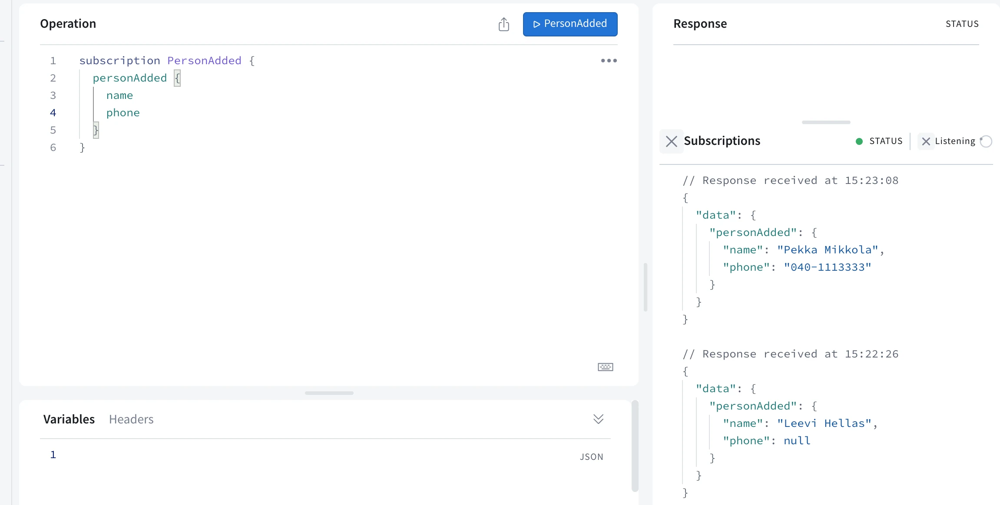
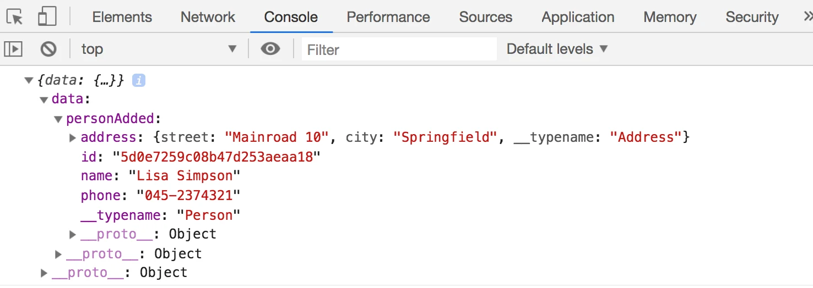

Fragments والاشتراكات
نقترب من نهاية هذا الجزء. لنختم بإلقاء نظرة على بضعة تفاصيل إضافية حول GraphQL.
Fragments
من الشائع جداً في GraphQL أن تُعيد استعلامات متعددة نتائج متشابهة. فمثلاً، استعلام تفاصيل شخص
query {
findPerson(name: "Pekka Mikkola") {
name
phone
address{
street
city
}
}
}
واستعلام جميع الأشخاص
query {
allPersons {
name
phone
address{
street
city
}
}
}
كلاهما يُعيد أشخاصاً. وعند اختيار الحقول المُعادة، يجب أن يعرّف الاستعلامان الحقول نفسها تماماً.
يمكن تبسيط مثل هذه الحالات باستخدام fragments. ويبدو الـfragment الذي يختار كل تفاصيل شخص هكذا:
fragment PersonDetails on Person {
name
phone
address {
street
city
}
}
باستخدام الـfragment، يمكننا كتابة الاستعلامات بصيغة مختصرة:
query {
allPersons {
...PersonDetails // HIGHLIGHT LINE
}
}
query {
findPerson(name: "Pekka Mikkola") {
...PersonDetails // HIGHLIGHT LINE
}
}
الـfragments لا تُعرَّف في مخطط GraphQL، بل في العميل. ويجب التصريح عن الـfragments عندما يستخدمها العميل في الاستعلامات.
من حيث المبدأ، يمكننا التصريح عن الـfragment مع كل استعلام هكذا:
export const FIND_PERSON = gql`
query findPersonByName($nameToSearch: String!) {
findPerson(name: $nameToSearch) {
...PersonDetails
}
}
fragment PersonDetails on Person {
id
name
phone
address {
street
city
}
}
`
لكن من الأكثر منطقية بكثير تعريف الـfragment مرة واحدة وتخزينه في متغير. لنضف تعريف الـfragment إلى بداية ملف queries.js:
const PERSON_DETAILS = gql`
fragment PersonDetails on Person {
id
name
phone
address {
street
city
}
}
`
يمكن الآن تضمين الـfragment في كل الاستعلامات والـmutations التي تحتاجه باستخدام عملية الأقواس المعقوفة بعد علامة الدولار:
export const FIND_PERSON = gql`
query findPersonByName($nameToSearch: String!) {
findPerson(name: $nameToSearch) {
...PersonDetails
}
}
${PERSON_DETAILS}
`
إذ يُدرَج الآن القالب النصي الموجود في المتغير PERSON_DETAILS كجزء من القالب النصي FIND_PERSON. وعملياً، النتيجة النهائية مطابقة تماماً لما في المثال السابق، حيث كان الـfragment معرَّفاً مباشرة إلى جانب الاستعلام.
الاشتراكات
إلى جانب نوعي query وmutation، يقدّم GraphQL نوع عملية ثالثاً: الاشتراكات (subscriptions). فبالاشتراكات، يمكن للعملاء الاشتراك في تحديثات حول التغييرات التي تطرأ على الخادم.
تختلف الاشتراكات جذرياً عن أي شيء رأيناه في هذا المقرر حتى الآن. فحتى الآن، كان كل تفاعل بين المتصفح والخادم ناتجاً عن تطبيق React في المتصفح يرسل طلبات HTTP إلى الخادم. وقد نُفِّذت استعلامات GraphQL والـmutations بالطريقة نفسها أيضاً. أما مع الاشتراكات فالوضع معاكس: فبعد أن ينشئ التطبيق اشتراكاً، يبدأ في الاستماع إلى الخادم. وعندما تحدث تغييرات على الخادم، يرسل إشعاراً إلى كل مشتركيه.
ومن الناحية التقنية، لا يُناسب بروتوكول HTTP جيداً التواصل المتجه من الخادم إلى المتصفح. لذلك يستخدم Apollo في الخفاء WebSockets للتواصل بين الخادم والمشتركين.
expressMiddleware
بدءاً من الإصدار 3.0، لم يعد Apollo Server يقدّم دعماً مباشراً للاشتراكات. لذلك نحتاج إلى إجراء عدد من التغييرات على شيفرة الواجهة الخلفية كي تعمل الاشتراكات.
حتى الآن، كنا نشغّل التطبيق بالدالة سهلة الاستخدام startStandaloneServer، التي بفضلها لم يكن التطبيق بحاجة إلى كثير من الإعداد:
const { startStandaloneServer } = require('@apollo/server/standalone')
// ...
const startServer = (port) => {
const server = new ApolloServer({
typeDefs,
resolvers,
})
startStandaloneServer(server, {
listen: { port },
context: async ({ req }) => {
// ...
},
}).then(({ url }) => {
console.log(`Server ready at ${url}`)
})
}
لسوء الحظ، لا تسمح startStandaloneServer بإضافة اشتراكات إلى التطبيق، لذا لننتقل إلى الدالة الأقوى expressMiddleware. وكما يوحي اسم الدالة، فهي وسيط Express، ما يعني أنه يجب إعداد Express أيضاً للتطبيق، بحيث يعمل خادم GraphQL كوسيط.
لنثبّت Express وحزمة تكامل Apollo Server:
npm install express cors @as-integrations/express5
ونغيّر ملف server.js إلى الشكل التالي:
const { ApolloServer } = require('@apollo/server')
// BEGIN HIGHLIGHT
const {
ApolloServerPluginDrainHttpServer,
} = require('@apollo/server/plugin/drainHttpServer')
const { expressMiddleware } = require('@as-integrations/express5')
const cors = require('cors')
const express = require('express')
const { makeExecutableSchema } = require('@graphql-tools/schema')
const http = require('http')
// END HIGHLIGHT
const jwt = require('jsonwebtoken')
const resolvers = require('./resolvers')
const typeDefs = require('./schema')
const User = require('./models/user')
const getUserFromAuthHeader = async (auth) => {
if (!auth || !auth.startsWith('Bearer ')) {
return null
}
const decodedToken = jwt.verify(auth.substring(7), process.env.JWT_SECRET)
return User.findById(decodedToken.id).populate('friends')
}
// BEGIN HIGHLIGHT
const startServer = async (port) => {
const app = express()
const httpServer = http.createServer(app)
const server = new ApolloServer({
schema: makeExecutableSchema({ typeDefs, resolvers }),
plugins: [ApolloServerPluginDrainHttpServer({ httpServer })],
})
await server.start()
app.use(
'/',
cors(),
express.json(),
expressMiddleware(server, {
context: async ({ req }) => {
const auth = req.headers.authorization
const currentUser = await getUserFromAuthHeader(auth)
return { currentUser }
},
}),
)
httpServer.listen(port, () =>
console.log(`Server is now running on http://localhost:${port}`),
)
}
// END HIGHLIGHT
module.exports = startServer
خادم GraphQL في المتغير server متصل الآن بالاستماع إلى جذر الخادم، أي إلى المسار /، باستخدام كائن expressMiddleware. وتُضبط معلومات المستخدم المسجَّل الدخول في السياق باستخدام الدالة التي عرّفناها سابقاً. ولأنه خادم Express، نحتاج أيضاً إلى الوسيطين express-json وcors كي تُحلَّل البيانات المضمّنة في الطلبات تحليلاً صحيحاً وكي لا تظهر مشكلات CORS.
يجب تشغيل خادم GraphQL قبل أن يبدأ تطبيق Express بالاستماع على المنفذ المحدد، لذا جُعلت الدالة startServer دالة async لتكون قادرة على انتظار بدء خادم GraphQL:
await server.start()
ووفقاً للتوصيات الواردة في الوثائق، أُضيف ApolloServerPluginDrainHttpServer إلى إعدادات خادم GraphQL:
const server = new ApolloServer({
schema: makeExecutableSchema({ typeDefs, resolvers }),
plugins: [ApolloServerPluginDrainHttpServer({ httpServer })], // HIGHLIGHT LINE
})
تضمن هذه الإضافة إغلاق الخادم إغلاقاً نظيفاً عند إيقاف عملية الخادم. فهي مثلاً تتيح إنهاء معالجة الطلبات الجارية وإغلاق اتصالات العملاء كي لا تبقى معلّقة.
يمكن العثور على شيفرة الواجهة الخلفية على GitHub، في الفرع part8-6.
الاشتراكات على الخادم
لننفّذ اشتراكات للاشتراك في إشعارات حول الأشخاص الجدد المُضافين.
يتغير المخطط هكذا:
type Subscription {
personAdded: Person!
}
فعند إضافة شخص جديد، تُرسَل كل تفاصيله إلى جميع المشتركين.
أولاً، يجب أن نثبّت حزماً لإضافة الاشتراكات إلى GraphQL ومكتبة WebSocket لـNode.js:
npm install graphql-ws ws @graphql-tools/schema
يُغيَّر ملف server.js إلى:
// BEGIN HIGHLIGHT
const { WebSocketServer } = require('ws')
const { useServer } = require('graphql-ws/use/ws')
// END HIGHLIGHT
// ...
const startServer = async (port) => {
const app = express()
const httpServer = http.createServer(app)
// BEGIN HIGHLIGHT
const wsServer = new WebSocketServer({
server: httpServer,
path: '/',
})
const schema = makeExecutableSchema({ typeDefs, resolvers })
const serverCleanup = useServer({ schema }, wsServer)
// END HIGHLIGHT
const server = new ApolloServer({
// BEGIN HIGHLIGHT
schema,
plugins: [
ApolloServerPluginDrainHttpServer({ httpServer }),
{
async serverWillStart() {
return {
async drainServer() {
await serverCleanup.dispose();
},
}
},
},
],
// END HIGHLIGHT
})
await server.start()
// ...
}
عند استخدام الاستعلامات والـmutations، يستخدم GraphQL بروتوكول HTTP في التواصل. أما في حالة الاشتراكات، فيحدث التواصل بين العميل والخادم عبر WebSockets.
ينشئ الإعداد أعلاه، إلى جانب مستمع طلبات HTTP، خدمة تستمع إلى WebSockets وتربطها بمخطط GraphQL الخاص بالخادم. ويسجّل الجزء الثاني من الإعداد دالة تُغلق اتصال WebSocket عند إيقاف الخادم. وإذا كنت مهتماً بتفاصيل الإعدادات أكثر، فإن وثائق Apollo تشرح بدقة معقولة ما يفعله كل سطر من الشيفرة.
وعلى عكس HTTP، يمكن للخادم عند استخدام WebSockets أن يبادر أيضاً بإرسال البيانات. لذلك تُناسب WebSockets اشتراكات GraphQL جيداً، حيث يجب أن يكون الخادم قادراً على إشعار كل العملاء الذين أنشأوا اشتراكاً معيناً عند وقوع الحدث المقابل (مثل إنشاء شخص).
يحتاج الاشتراك personAdded إلى resolver. كما يجب تعديل resolver الخاص بالـaddPerson ليرسل إشعاراً إلى المشتركين.
لنثبّت أولاً مكتبة توفّر وظيفة النشر والاشتراك:
npm install graphql-subscriptions
التغييرات في ملف resolvers.js كالتالي:
const { GraphQLError } = require('graphql')
const { PubSub } = require('graphql-subscriptions') // HIGHLIGHT LINE
const jwt = require('jsonwebtoken')
const Person = require('./models/person')
const User = require('./models/user')
const pubsub = new PubSub() // HIGHLIGHT LINE
const resolvers = {
// ...
Mutation: {
addPerson: async (root, args, context) => {
const currentUser = context.currentUser
if (!currentUser) {
throw new GraphQLError('not authenticated', {
extensions: {
code: 'UNAUTHENTICATED',
},
})
}
const nameExists = await Person.exists({ name: args.name })
if (nameExists) {
throw new GraphQLError(`Name must be unique: ${args.name}`, {
extensions: {
code: 'BAD_USER_INPUT',
invalidArgs: args.name,
},
})
}
const person = new Person({ ...args })
try {
await person.save()
currentUser.friends = currentUser.friends.concat(person)
await currentUser.save()
} catch (error) {
throw new GraphQLError(`Saving person failed: ${error.message}`, {
extensions: {
code: 'BAD_USER_INPUT',
invalidArgs: args.name,
error,
},
})
}
pubsub.publish('PERSON_ADDED', { personAdded: person }) // HIGHLIGHT LINE
return person
},
// ...
},
// BEGIN HIGHLIGHT
Subscription: {
personAdded: {
subscribe: () => pubsub.asyncIterableIterator('PERSON_ADDED')
},
},
// END HIGHLIGHT
}
مع الاشتراكات، يتبع التواصل نمط النشر والاشتراك باستخدام كائن PubSub.
لم تُضَف سوى بضعة أسطر من الشيفرة، لكن الكثير يحدث في الخفاء. فـresolver الخاص بالاشتراك personAdded يسجّل ويحفظ معلومات عن كل العملاء الذين ينشئون الاشتراك. ويُحفظ العملاء في "كائن مُكرِّر" يُسمى PERSON_ADDED بفضل الشيفرة التالية:
Subscription: {
personAdded: {
subscribe: () => pubsub.asyncIterableIterator('PERSON_ADDED')
},
},
اسم المُكرِّر نص عشوائي، لكنه اتباعاً للعُرف يكون اسم الاشتراك مكتوباً بأحرف كبيرة.
إضافة شخص جديد تنشر إشعاراً بالعملية إلى جميع المشتركين باستخدام طريقة publish في PubSub:
pubsub.publish('PERSON_ADDED', { personAdded: person })
تنفيذ هذا السطر يرسل رسالة WebSocket عن الشخص المُضاف إلى كل العملاء المسجَّلين في المُكرِّر PERSON_ADDED.
يمكن اختبار الاشتراكات باستخدام Apollo Explorer هكذا:

فيكون الاشتراك
subscription Subscription {
personAdded {
phone
name
}
}
عند الضغط على الزر الأزرق PersonAdded، يبدأ Explorer في انتظار إضافة شخص جديد. وعند الإضافة، تظهر معلومات الشخص المُضاف على الجانب الأيمن من Explorer.
يتضمن تنفيذ الاشتراكات الكثير من الإعدادات المختلفة. وبالنسبة للتمارين القليلة في هذا المقرر، ستكون بخير دون القلق بشأن كل التفاصيل. لكن إذا كنت تنفّذ اشتراكات في تطبيق مخصص للاستخدام الفعلي، فمن المؤكد أن عليك قراءة وثائق Apollo عن الاشتراكات.
يمكن العثور على شيفرة الواجهة الخلفية على GitHub، في الفرع part8-7.
الاشتراكات على العميل
لكي نستخدم الاشتراكات في تطبيق React لدينا، علينا إجراء بعض التغييرات، خصوصاً على إعداداته.
لنضف مكتبة graphql-ws كاعتمادية في الواجهة الأمامية. فهي تمكّن اتصالات WebSocket لاشتراكات GraphQL:
npm install graphql-ws
يجب تعديل الإعدادات في main.jsx هكذا:
import { StrictMode } from 'react'
import { createRoot } from 'react-dom/client'
import App from './App.jsx'
import {
ApolloClient,
ApolloLink, // HIGHLIGHT LINE
HttpLink,
InMemoryCache,
} from '@apollo/client'
import { ApolloProvider } from '@apollo/client/react'
import { SetContextLink } from '@apollo/client/link/context'
// BEGIN HIGHLIGHT
import { GraphQLWsLink } from '@apollo/client/link/subscriptions'
import { getMainDefinition } from '@apollo/client/utilities'
import { createClient } from 'graphql-ws'
// END HIGHLIGHT
const authLink = new SetContextLink(({ headers }) => {
const token = localStorage.getItem('phonebook-user-token')
return {
headers: {
...headers,
authorization: token ? `Bearer ${token}` : null,
},
}
})
const httpLink = new HttpLink({ uri: 'http://localhost:4000' })
// BEGIN HIGHLIGHT
const wsLink = new GraphQLWsLink(
createClient({
url: 'ws://localhost:4000',
}),
)
// END HIGHLIGHT
// BEGIN HIGHLIGHT
const splitLink = ApolloLink.split(
({ query }) => {
const definition = getMainDefinition(query)
return (
definition.kind === 'OperationDefinition' &&
definition.operation === 'subscription'
)
},
wsLink,
authLink.concat(httpLink),
)
// END HIGHLIGHT
const client = new ApolloClient({
cache: new InMemoryCache(),
link: splitLink, // HIGHLIGHT LINE
})
createRoot(document.getElementById('root')).render(
<StrictMode>
<ApolloProvider client={client}>
<App />
</ApolloProvider>
</StrictMode>,
)
يعود الإعداد الجديد إلى أن التطبيق يجب أن يملك اتصال HTTP بالإضافة إلى اتصال WebSocket بخادم GraphQL:
const httpLink = new HttpLink({ uri: 'http://localhost:4000' })
const wsLink = new GraphQLWsLink(
createClient({
url: 'ws://localhost:4000',
}),
)
لنعدّل بعد ذلك التطبيق ليُشترك في معلومات عن الأشخاص الجدد من الخادم. أضف الشيفرة التي تعرّف الاشتراك إلى ملف queries.js:
export const PERSON_ADDED = gql`
subscription {
personAdded {
...PersonDetails
}
}
${PERSON_DETAILS}
`
تُنشأ الاشتراكات باستخدام دالة الخطاف useSubscription. لننشئ اشتراكاً في مكوّن App:
import {
useApolloClient,
useQuery,
useSubscription, // HIGHLIGHT LINE
} from '@apollo/client/react'
import { useState } from 'react'
import LoginForm from './components/LoginForm'
import Notify from './components/Notify'
import PersonForm from './components/PersonForm'
import Persons from './components/Persons'
import PhoneForm from './components/PhoneForm'
import { ALL_PERSONS, PERSON_ADDED } from './queries' // HIGHLIGHT LINE
const App = () => {
const [token, setToken] = useState(
localStorage.getItem('phonebook-user-token'),
)
const [errorMessage, setErrorMessage] = useState(null)
const result = useQuery(ALL_PERSONS)
const client = useApolloClient()
// BEGIN HIGHLIGHT
useSubscription(PERSON_ADDED, {
onData: ({ data }) => {
console.log(data)
},
})
// END HIGHLIGHT
if (result.loading) {
return <div>loading...</div>
}
// ...
}
عند إضافة شخص جديد الآن إلى دفتر الهاتف، أياً كان مكان الإضافة، تُطبع تفاصيل الشخص الجديد في وحدة تحكم العميل:

عند إضافة شخص جديد إلى القائمة، يرسل الخادم التفاصيل إلى العميل، وتُستدعى دالة الاستدعاء المعرَّفة كقيمة للخاصية onData في خطاف useSubscription، ويُمرَّر إليها الشخص المُضاف على الخادم كمعامل.
يمكننا إظهار إشعار للمستخدم عند إضافة شخص جديد كما يلي:
const App = () => {
// ...
useSubscription(PERSON_ADDED, {
onData: ({ data }) => {
const addedPerson = data.data.personAdded // HIGHLIGHT LINE
notify(`${addedPerson.name} added`) // HIGHLIGHT LINE
}
})
// ...
}
الآن، مثلاً، يُعرض الشخص المُضاف عبر Apollo Studio Explorer فوراً في واجهة التطبيق.
لكن هناك مشكلة صغيرة في الحل. فعند إضافة شخص جديد عبر نموذج التطبيق، ينتهي الشخص المُضاف في الذاكرة المؤقتة مرتين، لأن كلاً من خطاف useSubscription ومكوّن PersonForm يضيف الشخص الجديد إلى الذاكرة المؤقتة. ونتيجة لذلك، يُعرض الشخص المُضاف على الشاشة مرتين.
أحد الحلول الممكنة هو تحديث الذاكرة المؤقتة في خطاف useSubscription فقط. لكن هذا غير مستحسن. فمن الممارسات الجيدة أن يرى المستخدم التغييرات التي يجريها في التطبيق فوراً. وقد يحدث تحديث الذاكرة المؤقتة الذي ينفّذه الاشتراك بتأخير ولا يمكن الاعتماد عليه كلياً. لذلك سنلتزم بحل تُحدَّث فيه الذاكرة المؤقتة في خطاف useSubscription وفي مكوّن PersonForm معاً.
لنحل المشكلة بالتحقق من أن الشخص يُضاف إلى الذاكرة المؤقتة فقط إذا لم يكن قد أُضيف إليها سابقاً. وفي الوقت نفسه، سنستخرج عملية تحديث الذاكرة المؤقتة إلى دالة مساعدة خاصة بها في ملف utils/apolloCache.js:
import { ALL_PERSONS } from '../queries'
export const addPersonToCache = (cache, personToAdd) => {
cache.updateQuery({ query: ALL_PERSONS }, ({ allPersons }) => {
const personExists = allPersons.some(
(person) => person.id === personToAdd.id,
)
if (personExists) {
return { allPersons }
}
return {
allPersons: allPersons.concat(personToAdd),
}
})
}
تُحدّث الدالة المساعدة addPersonToCache الذاكرة المؤقتة باستخدام الطريقة المألوفة cache.updateQuery. وفي منطق تحديث الذاكرة المؤقتة، نتحقق أولاً مما إذا كان الشخص قد أُضيف إلى الذاكرة المؤقتة سابقاً. ونبحث عن الشخص المطلوب إضافته بين الأشخاص الموجودين حالياً في الذاكرة المؤقتة باستخدام طريقة some في مصفوفة JavaScript:
const personExists = allPersons.some(
(person) => person.id === personToAdd.id,
)
some طريقة تبحث في مجموعة عن عنصر يطابق الشرط المعطى. وهي تعيد قيمة منطقية تشير إلى ما إذا عُثر على عنصر مطابق. وفي حالتنا، تعيد الطريقة True إذا كانت الذاكرة المؤقتة تحتوي بالفعل على شخص بهذا id، وإلا فإنها تعيد False.
إذا كان الشخص موجوداً بالفعل في الذاكرة المؤقتة، نعيد محتوى الذاكرة المؤقتة كما هو ولا نضيف الشخص مرة أخرى. وإلا، نعيد محتوى الذاكرة المؤقتة مع إلحاق الشخص الجديد باستخدام الطريقة concat:
if (personExists) {
return { allPersons }
}
return {
allPersons: allPersons.concat(personToAdd),
}
لنعدّل خطاف useSubscription في مكوّن App ليحدّث الذاكرة المؤقتة باستخدام الدالة المساعدة addPersonToCache التي أنشأناها:
import { addPersonToCache } from './utils/apolloCache' // HIGHLIGHT LINE
const App = () => {
const [token, setToken] = useState(
localStorage.getItem('phonebook-user-token'),
)
const [errorMessage, setErrorMessage] = useState(null)
const result = useQuery(ALL_PERSONS)
const client = useApolloClient()
useSubscription(PERSON_ADDED, {
onData: ({ data }) => {
const addedPerson = data.data.personAdded
notify(`${addedPerson.name} added`)
addPersonToCache(client.cache, addedPerson) // HIGHLIGHT LINE
},
})
// ...
}
وسنستخدم الدالة أيضاً عند تحديث الذاكرة المؤقتة المتعلق بإضافة شخص جديد:
import { addPersonToCache } from '../utils/apolloCache' // HIGHLIGHT LINE
const PersonForm = ({ setError }) => {
const [name, setName] = useState('')
const [phone, setPhone] = useState('')
const [street, setStreet] = useState('')
const [city, setCity] = useState('')
const [createPerson] = useMutation(CREATE_PERSON, {
onError: (error) => setError(error.message),
update: (cache, response) => {
// BEGIN HIGHLIGHT
const addedPerson = response.data.addPerson
addPersonToCache(cache, addedPerson)
// END HIGHLIGHT
},
})
// ...
}
الآن يعمل تحديث الذاكرة المؤقتة بشكل صحيح في جميع الحالات، أي أن الشخص الجديد يُضاف إلى الذاكرة المؤقتة فقط إذا لم يكن قد أُضيف إليها سابقاً.
يمكن العثور على الشيفرة النهائية للعميل على GitHub، في الفرع part8-6.
مشكلة n+1
لنضف بعض الأشياء إلى الواجهة الخلفية. لنعدّل المخطط بحيث يصبح للنوع Person حقل friendOf يخبرنا في قائمة أصدقاء مَن يوجد هذا الشخص.
type Person {
name: String!
phone: String
address: Address!
friendOf: [User!]! // HIGHLIGHT LINE
id: ID!
}
يجب أن يدعم التطبيق الاستعلام التالي:
query {
findPerson(name: "Leevi Hellas") {
friendOf {
username
}
}
}
ولأن friendOf ليس حقلاً من حقول كائنات Person في قاعدة البيانات، علينا إنشاء resolver له قادر على حل هذه المسألة. لننشئ أولاً resolver يعيد قائمة فارغة:
Person: {
address: ({ street, city }) => {
return {
street,
city,
}
},
// BEGIN HIGHLIGHT
friendOf: async (root) => {
return []
}
// END HIGHLIGHT
},
المعامل root هو كائن الشخص الذي تُنشأ له قائمة أصدقاء، لذا نبحث في كل كائنات User عن تلك التي تحتوي root._id في قائمة أصدقائها:
Person: {
// ...
friendOf: async (root) => {
const friends = await User.find({
friends: {
$in: [root._id]
}
})
return friends
}
},
الآن يعمل التطبيق.
يمكننا فوراً تنفيذ استعلامات أكثر تعقيداً. فمن الممكن مثلاً إيجاد أصدقاء كل المستخدمين:
query {
allPersons {
name
friendOf {
username
}
}
}
لكن التطبيق الآن لديه مشكلة واحدة: يجري عدد كبير غير معقول من استعلامات قاعدة البيانات. لنضف تسجيلاً في وحدة التحكم إلى أجزاء الـresolvers التي تنفّذ استعلامات قاعدة البيانات:
allPersons: async (root, args) => {
console.log('Person.find') // HIGHLIGHT LINE
if (!args.phone) {
return Person.find({})
}
return Person.find({ phone: { $exists: args.phone === 'YES' } })
}
friendOf: async (root) => {
console.log('User.find') // HIGHLIGHT LINE
const friends = await User.find({
friends: {
$in: [root._id],
},
})
return friends
}
نلاحظ أنه إذا كان في قاعدة البيانات خمسة أشخاص، فإن استعلام allPersons المذكور سابقاً يسبّب استعلامات قاعدة البيانات التالية:
Person.find
User.find
User.find
User.find
User.find
User.find
إذ على الرغم من أننا ننفّذ أساساً استعلاماً واحداً لكل الأشخاص، فإن كل شخص يسبّب استعلاماً إضافياً في الـresolver الخاص به.
هذا تجلٍّ لمشكلة n+1 الشهيرة، التي تظهر من وقت لآخر في سياقات مختلفة، وتتسلل أحياناً إلى المطورين دون أن ينتبهوا.
يعتمد الحل الصحيح لمشكلة n+1 على الحالة. وغالباً ما يتطلب استخدام نوع من استعلام الدمج (join) بدلاً من استعلامات منفصلة متعددة.
في حالتنا، سيكون الحل الأسهل هو حفظ، في كل كائن Person، قائمة أصدقاء مَن ينتمي إليها:
const schema = new mongoose.Schema({
name: {
type: String,
required: true,
minlength: 5
},
phone: {
type: String,
minlength: 5
},
street: {
type: String,
required: true,
minlength: 5
},
city: {
type: String,
required: true,
minlength: 3
},
// BEGIN HIGHLIGHT
friendOf: [
{
type: mongoose.Schema.Types.ObjectId,
ref: 'User'
}
],
// END HIGHLIGHT
})
ثم يمكننا تنفيذ "استعلام دمج"، أو تعبئة حقول friendOf للأشخاص عند جلب كائنات Person:
Query: {
allPersons: (root, args) => {
console.log('Person.find')
if (!args.phone) {
return Person.find({}).populate('friendOf') // HIGHLIGHT LINE
}
return Person.find({ phone: { $exists: args.phone === 'YES' } })
.populate('friendOf') // HIGHLIGHT LINE
},
// ...
}
بعد هذا التغيير، لن نحتاج إلى resolver منفصل لحقل friendOf.
استعلام allPersons لا يسبّب مشكلة n+1 إذا جلبنا الاسم ورقم الهاتف فقط:
query {
allPersons {
name
phone
}
}
إذا عدّلنا allPersons لتنفيذ استعلام دمج لأنها تسبّب أحياناً مشكلة n+1، فسيصبح أثقل عندما لا نحتاج إلى معلومات عن أشخاص ذوي صلة. وباستخدام المعامل الرابع لدوال الـresolver، يمكننا تحسين الاستعلام أكثر. فالمعامل الرابع يمكن استخدامه لفحص الاستعلام نفسه، بحيث ننفّذ استعلام الدمج فقط في الحالات التي يُتوقَّع فيها خطر مشكلات n+1. لكن لا ينبغي أن نتعجل إلى هذا المستوى من التحسين قبل التأكد من أنه يستحق العناء.
يهدر المبرمجون كميات هائلة من الوقت في التفكير في سرعة الأجزاء غير الحرجة من برامجهم أو القلق بشأنها، ولِمحاولات الكفاءة هذه في الواقع تأثير سلبي قوي عندما نأخذ تصحيح الأخطاء والصيانة في الحسبان. ينبغي أن ننسى التحسينات الصغيرة، في نحو 97% من الحالات: التحسين المُبكر هو أصل كل الشرور.
تقدّم مكتبة DataLoader من مؤسسة GraphQL حلاً جيداً لمشكلة n+1 بين مشكلات أخرى. والمزيد عن استخدام DataLoader مع خادم Apollo هنا وهنا.
خاتمة
التطبيق الذي بنيناه في هذا الجزء ليس منظّماً بالطريقة الأمثل. وقد أجرينا بعض التنظيف بنقل المخطط والـresolvers إلى ملفين خاصين بهما، لكن لا يزال هناك مجال كبير للتحسين. ويمكن العثور على أمثلة لطرق أفضل لتنظيم تطبيقات GraphQL على الإنترنت، مثلاً للخادم هنا وللعميل هنا.
GraphQL تقنية قديمة نسبياً بالفعل: فهي قيد الاستخدام الداخلي في Facebook منذ عام 2012، لذا يمكن القول إنها مجرَّبة عملياً. وقد أطلقت Facebook تقنية GraphQL عام 2015، ومنذ ذلك الحين ترسّخت مكانتها. حتى "موت" REST جرى التنبؤ به هنا قبل عشرينيات هذا القرن، لكن ذلك لم يحدث. فلا يزال REST مستخدماً على نطاق واسع ولا يزال يعمل بامتياز في حالات كثيرة، ومن غير المرجح أن يحل GraphQL محل REST يوماً. لكن GraphQL أصبحت طريقة بديلة لبناء الـAPIs، ويستحق بالتأكيد أن تتعرّف عليها.
25. اختياري: الاشتراكات - الخادم
26. اختياري: الاشتراكات - العميل، الجزء 1
27. اختياري: الاشتراكات - العميل، الجزء 2
28. اختياري: n+1
29. مستودع GitHub الخاص بك